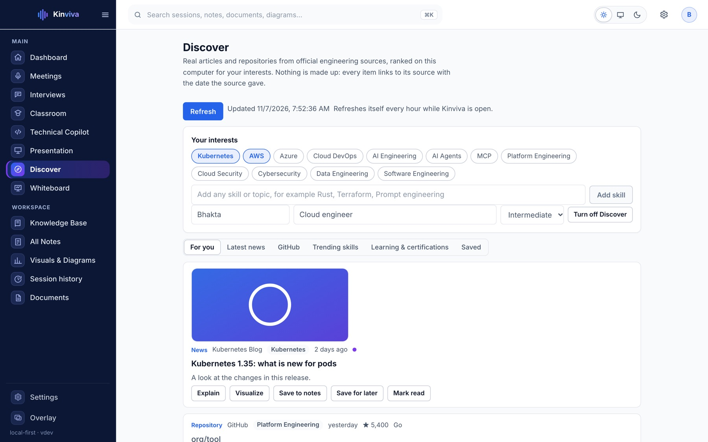

[ DISCOVER & SKILLS ]
Keep growing the skills you care about.
Real articles and open-source projects from official sources, ranked on your computer for the interests you pick.
About versions
The installer you can download today is 0.1.5, the first release named Kinviva (it was MeetingLens before). Features marked New in 0.1.5 were added since 0.1.4.
New in 0.1.5
Your interests, your feed.
Choose from twelve topics or add any skill of your own, such as Rust, Terraform or Prompt engineering. Discover matches articles and GitHub projects for it.
- Pictures from the articles and project logos, saved as small thumbnails on your computer
- Ranked locally by freshness, source quality and your interests
- Explain, draw it, save to notes or add to a learning plan on every item
- Mark read, save for later, and see trending topics counted from real posts

Real sources. Nothing invented.
Discover is off until you turn it on, and it lists where it will look. Every item links to its source with the date the source gave. Trends are counts of what was fetched, not a guess.
| Source | What it provides |
|---|---|
| Kubernetes Blog · CNCF | Project news and announcements |
| AWS News Blog · Azure Blog | Cloud service announcements |
| HashiCorp Blog · Docker Blog | Infrastructure and container tooling |
| GitHub Blog · Cloudflare Blog | Engineering and platform posts |
| GitHub search | Well-starred, recently updated projects for your interests |
| Official certification and learning pages | Links to AWS, Microsoft, CNCF and HashiCorp pages. No dates or claims copied. |